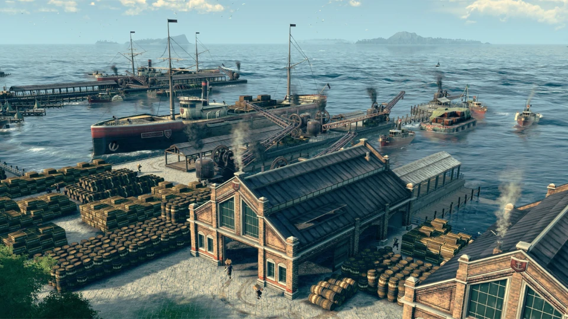
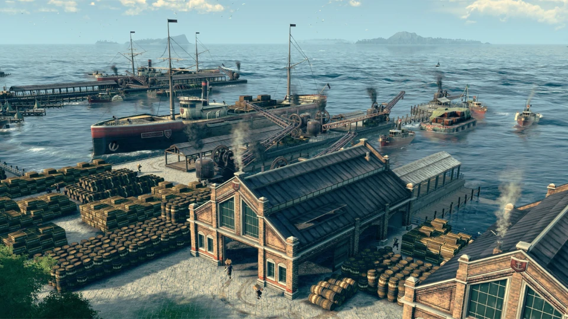
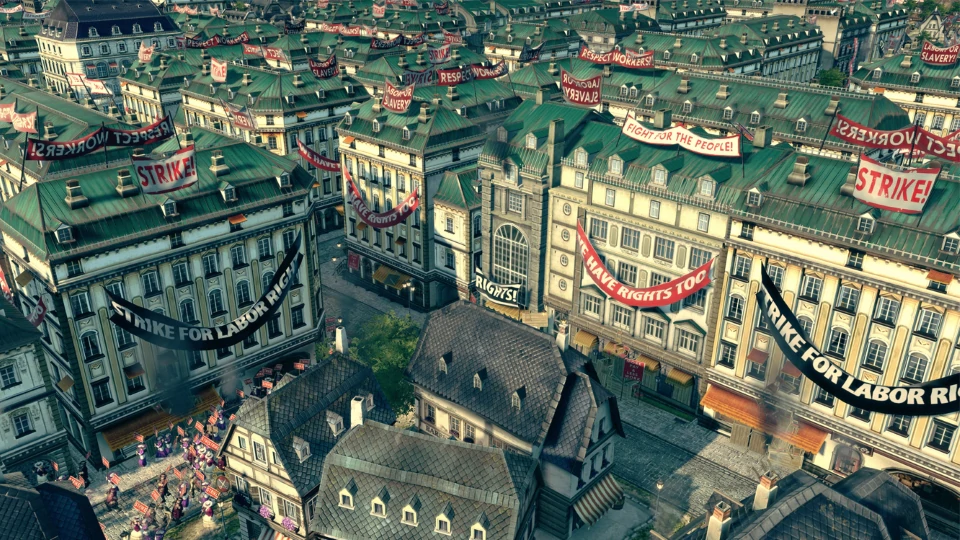
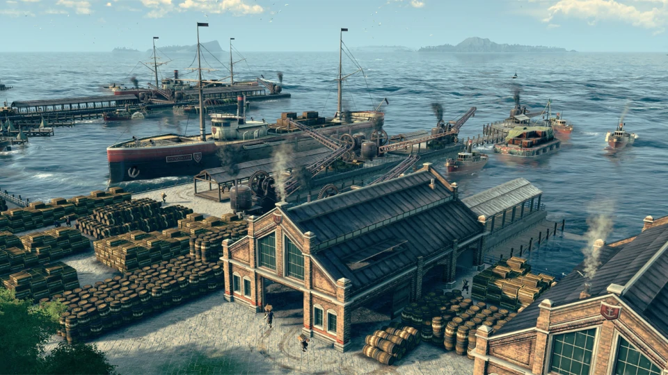
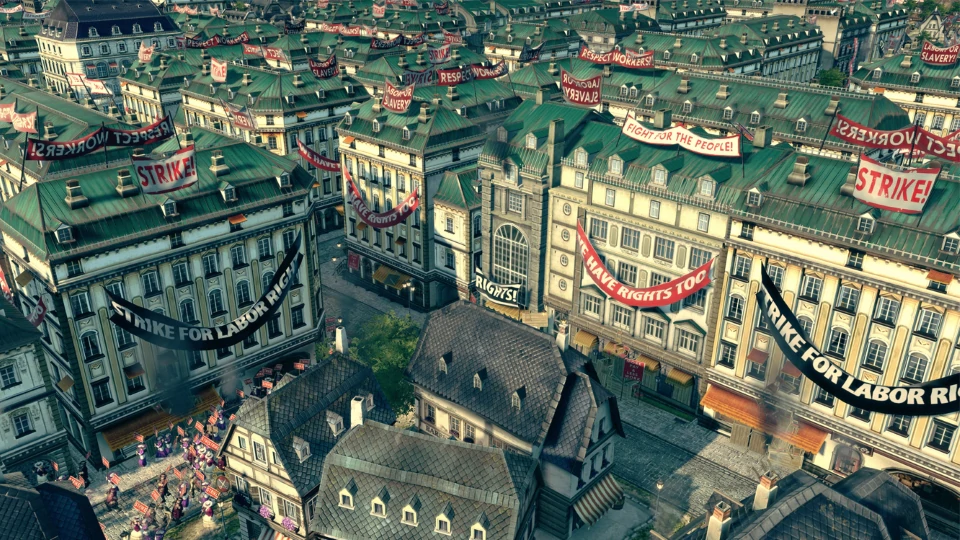

Welcome to the 19th century, a time of industrialization, diplomacy, and discovery.
Rich with technological innovations, conspiracies, and changing allegiances, this era presents the perfect setting for classic Anno gameplay. Anno 1800 provides players ample opportunity to prove their skills as a ruler as they create huge metropolises, plan efficient logistic networks, settle an exotic new continent, send out expeditions around the globe, and dominate their opponents by diplomacy, trade, or warfare.
Anno 1800 combines beloved features from 20 years of Anno history. It delivers a rich city-building experience, including a story-based campaign, a highly customizable sandbox mode, and the classic Anno multiplayer experience. Anno 1800 will see the return of beloved features such as individual AI opponents, shippable trade goods, randomly generated maps, multi-session gameplay, items, and more.
To bring this pivotal historical era to life, Anno 1800 introduces many all-new features to the franchise’s rich tradition. Expeditions allow players to send crews of specialists across the globe as they seek fame and fortune, while the new workforce feature makes managing your factories more demanding and realistic than ever. Finally, players will settle South America as they lay claim to the black gold powering this new age of industry.
Leading prosperous metropolises requires you to adapt your strategy to new situations. Fulfil the needs of your inhabitants by establishing numerous production chains, deal with other AI rulers sharing your world, and rise to prosperity by building a profitable network of trade routes.
Join the team from Ubisoft Blue Byte in the creation of Anno 1800. Get the latest news, development insights, and behind-the-scenes content on anno-union.com and help us shape the game as we regularly invite gamers to share their feedback, vote on features, create content, and test the game during development
Includes three DLCs to enhance your gameplay with new buildings, residential tiers and goods, plus three ornaments. In "Seat of Power", boost your economy with a prestigious palace and government departments. In "Bright Harvest", bring the wonders of mechanized farming to the countryside as you boost the efficiency of your farms with tractors and more. In "Land of Lions", travel to Africa and join forces with an embattled Emperor to bring life to the desert using the new irrigation system.

